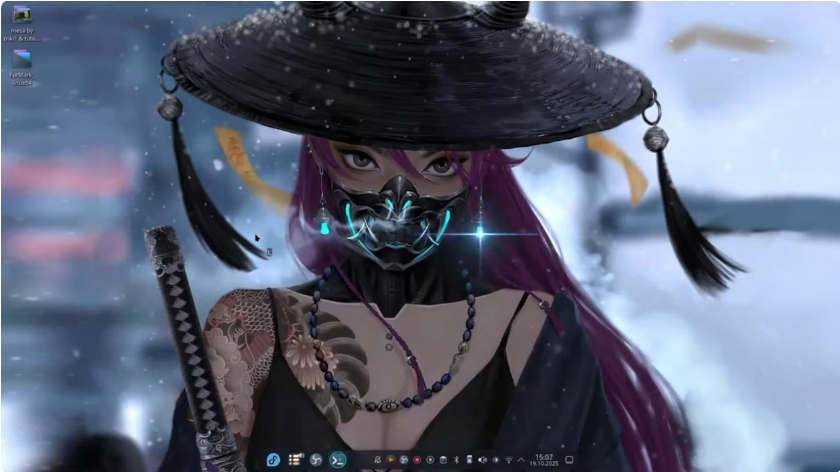

Fedora 41 PS4 : léger, beau, rapide
Fedora 41 est basé sur Arch, avec des mises a jours plus fréquente que trixie, mais demande plus de prudence. L'archive ps4fedora41kde_20241119.tar.xz pése 7.6 Giga, et nécessite une partition d'au moins 20G.
Description
- Vous allez apprendre a mettre a jour la distribution, avec un script Fedora-mesa-build
- C'est une distribution little, a vous de la customiser
Le script Fedora-mesa-buil est fourni avec les patchs libdrm et mesa-26.x déjà appliqués.
Mise a jour et fix
Comme sur toutes mes distributions, aucuns paquets n'est bloqués. Vous devez connaître le processe de mise a jour, avant de l'effectuer. Suivez la vidéo en bas de page pour cela.
Installation
sudo tar -xvJpf ps4fedora41kde_20241119.tar.xz -C /media/tux/ps4linux1 --numeric-ownerRemplacez tux par votre utilisateur et ps4linux1 par le label utilisé par votre initramfs.
Identifiants
Login et mot de passe : ps4linux
Téléchargement
Distribution Fedora Script de mise a jour
Vidéo de présentation
